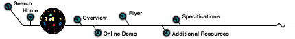

JavaTM Numerical Language Proposal
JavaTM Numerical Language Proposal
Making Java Competitive for Numerical Computing
The Java language (version 1.0) is not competitive for numerical computing. Most numerical development today is done with Fortran 90, MathWork's MatLab, Visual Numerics' PV-WAVE® and similar languages. This document describes a set of changes to Java to make it competitive with these languages. This proposal addresses the key syntactical weaknesses of Java for numerical computing.
Complex Numbers
The first addition to Java is a class Complex that implements double-precision complex arithmetic. Also the Java language would be extended to allow for the use of infix operators with Complex objects. In particular the unary operator - and the binary operators +, -, *, /, +=, -=, *=, /= will be extended to allow Complex operands. These binary operators will also be overloaded to allow for mixed double and Complex operands. The increment and modulus operators will not be overloaded for Complex.
As an example, consider a function that finds a root of the quadratic equation. (This is just an example, this function is not proposed as part of JNL. This algorithm is not the best way to numerically compute the root.) With the proposed extensions, this could be written as follows.
static Complex root(Complex a, Complex b, Complex c) {
return (-b+Complex.sqrt(b*b-4*a*c))/(2*a);
}
Without the extensions, the function could be written as follows.
static Complex root(Complex a, Complex b, Complex c) {
Complex b2 = Complex.multiply(b,b);
Complex ac4 = Complex.multiply(4,Complex.multiply(a,c));
Complex discrim = Complex.sqrt(Complex.subtract(b2,ac4));
return
Complex.divide(Complex.subtract(discrim,b)),Complex.multiply(2,a)));
}
Array Operators
This proposal calls for overloading the infix operators to work with arrays of built-in Java types: byte, short, int, char, float, double, boolean, and Complex. The operations will be applied elementwise.
For example, the following code fragment
double x[], y[], z[];
/* omitted code to initialize x and y */
z = x * y;
is equivalent to
double x[], y[], z[];
/* omitted code to initialize x and y */
if (x.length != y.length) throw IllegalArrayException;
z = new double[x.length];
for (int k = 0; k < x.length; k++)
z[k] = x[k] * y[k];
Infix operators are allowed for arrays only if they are allowed for the underlying simple types.
Type promotion follows the same rules as for simple types.
For linear algebra only arrays of type double need to be overloaded. But for other arrays, such as image processing, operations on arrays of integral types are needed.
Array Sections
This proposal also calls for adding an array section syntax to Java. If v is a one-dimensional array, then the array section v[3:9:2] stands for {v[3], v[5], v[7], v[9]}. The syntax is first:last:increment. All three parts are optional; they default to 0:length-1:1. Also allowed are the forms first:last and a single colon (:), which stands for the entire array. Array section operators can also be used with higher dimensional arrays, e.g. a[3:9:2][0:5], a[:][0:5].
Array sections can be lvalues, i.e. they can appear on the left side of the equal sign. In that case, changes to the section also change the underlying array values. In other cases, such as when a section is passed as an argument to a function, the section is an array containing a copy of the data.
An array section operation can throw an ArraySectionOutOfBoundsException.
JNL, a Java Numerical Library Proposal
JNL, the Java Numerical Library proposal is a set of classes for the most important numerical functions missing in Java. These classes are independent of the Java Numerical Language proposal, except that both require class Complex. This part of the proposal does not require that the infix operators work with Complex numbers.
Linear Algebra
The linear algebra class manipulate rectangular or square arrays of type double or Complex. A rectangular matrix is a double[][] with all of its rows the same length. A square matrix is a rectangular matrix with the number of columns equal to the number of rows.
The class DoubleVector contains static methods for manipulating vectors. It does not define a vector object; it is not possible to create an instance of DoubleVector. There are methods for vector norms, maximum and minimum elements, and dot product.
The class DoubleMatrix contains static methods for manipulating matrices. It does not define a matrix object; it is not possible to create an instance of DoubleMatrix. There are methods for matrix multiplication, inversion and solving linear systems.
The classes DoubleCholesky, DoubleLU, DoubleQR and DoubleSVD encapsulate standard matrix decompositions. Their constructors take a matrix as an argument and compute the decomposition. This may throw an exception. Other member functions are then used to use or return parts of the decomposition.
Analogous to these classes for double-precision arrays there will also be classes for Complex arrays.
Special Functions
The class Sfun contains a collection of special functions. This class is analogous to the existing class java.lang.Math, but contains more advanced functions. This class is a collection of static member functions and data; it cannot be instantiated.
Statistics
The class Statistics
contains a collection of basic statistical functions. This class is a
collection of static member functions; it cannot be instantiated.
Mircrosoft Excel(tm) Statistics and Finance
There are a number of statistical and financial functions
available in Microsoft Excel(tm) that are not currently in the JNL
specification. VNI has implemented these functions in Java for the
SmartTable product.
It has been sugggested that we should include them in the JNL as well.
Comments?

Copyright © 1997 - Visual Numerics, Inc.®